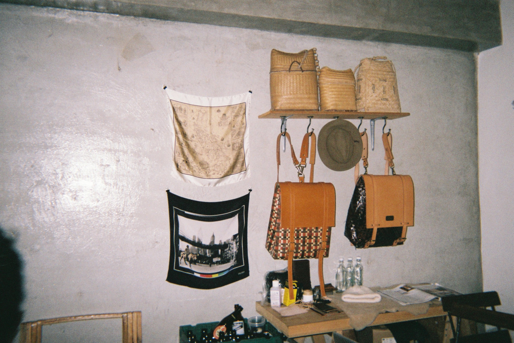
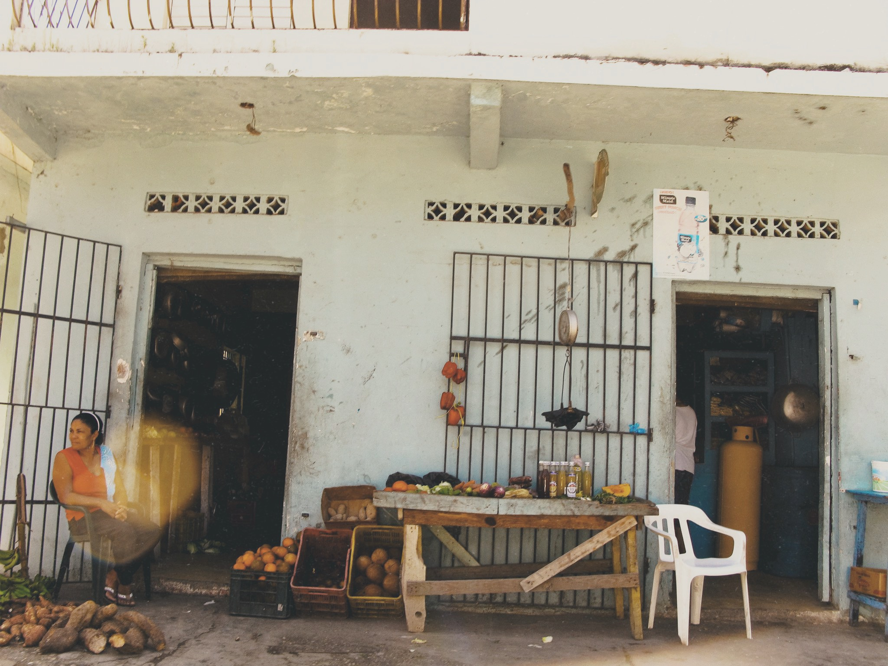

Brian is a multidisciplinary creator, navigating the world of art, music, design, web development, hospitality and retail.
He is currently the founding partner and co-CEO of ANNEX HOUSE Manila in Poblacion, Makati and has been in the F&B industry since 2017.
He has over 17 years of experience in advertising and marketing. He was the founding partner of [Word.] - a Brooklyn, NY-based creative studio. His client list includes Viacom (MTV, Cartoon Network), Bloomberg Television, Kate Spade NY, L’Occitane, Oxo, Whole Foods, Madison Square Garden, NY Knicks, Live Nation, Madonna, Beyonce and more.
Since relocating from NY to the Philippines, his career is now focused on creating unique F&B and nightlife experiences, building communities, and elevating Filipino hospitality.
—
For consulting and collaboration inquiries, please email… bjt[at]brianjtemporosa.com